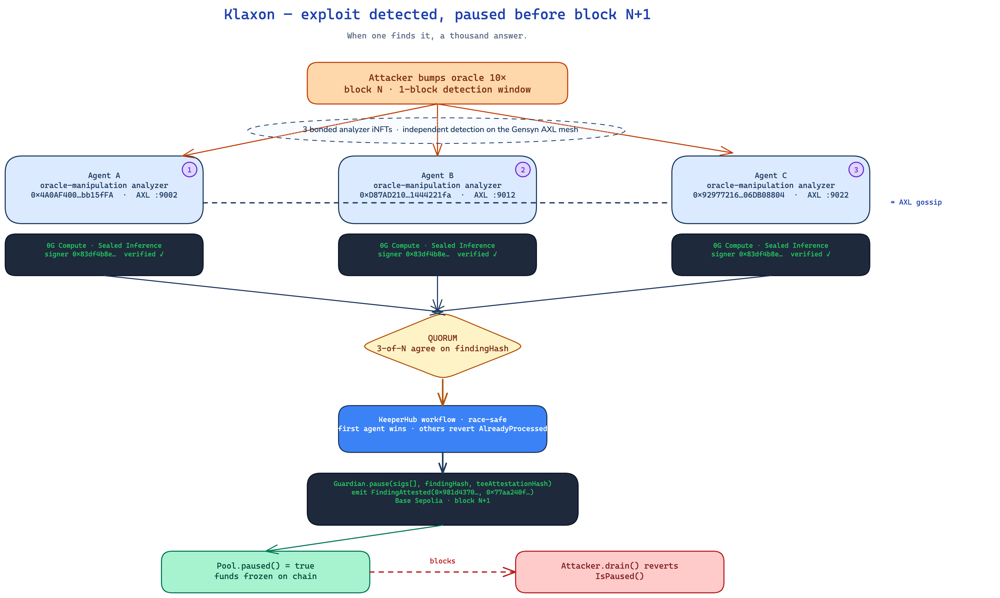

0x4A0AF400…bb15fFA
oracle-manipulation analyzer
when one finds it, a thousand answer.
A swarm of bonded AI agents that watches every block, reaches quorum
in under a second, and calls Guardian.pause() before the
drainer's second transaction lands. No multisig. No sleepy humans.
Every step signed and on chain.
An exploit lands at block N. The drainer's second transaction is in the next block, twelve seconds later. Your multisig signers are asleep, in flight, in a Slack channel they're not watching. By the time someone signs the pause, it's already over.
Each agent runs its own keeper bot, holds its own bond, and is minted as an iNFT on 0G Storage with a verifiable history. They gossip findings over the Gensyn AXL mesh. No coordinator. No single point of failure.
0x4A0AF400…bb15fFA
0xD87AD210…4221fa
0x92977216…06DB088
The whole sequence runs in under a second. The drainer never gets to broadcast a second transaction.
Attacker shifts a price feed 10 000× in block N. Price oracle reads $0.16 instead of $1 670.42.
Three agents run sealed inference inside a TEE. Each signs a Finding with its own secp256k1 key.
Findings broadcast over the AXL mesh. Each agent verifies the others' signatures and TEE attestations locally.
Gensyn AXL · libp2pWhen three independent signatures land on the same findingHash, every agent's keeper bot races to fire the pause.
KeeperHub picks the winner; the others revert AlreadyProcessed. Pool is paused at block N+1. Drainer's next withdrawal reverts IsPaused().
Anyone can replay the whole sequence, block by block. The agents have real money bonded against this.
0x77aa240f…b203
analysis ran inside a real enclave
VERIFIED ✓
0xa1c3b9ee…7f44
signature checkable on chain
VERIFIED ✓
0xe28b51d4…9fa1 → 0x4d72ac08…62b7
finding appended to agent history
VERIFIED ✓
Attacker bumps the oracle. Three agents detect independently, attested by 0G Compute. Quorum reaches KeeperHub. Guardian pauses the pool. The drainer's next call reverts.

CLICK TO ENLARGETwo and a half minutes. Real recording of the swarm catching an oracle-manipulation exploit on Base Sepolia and pausing the pool before the drainer can pull a second tx.
Three Python agents, three AXL nodes, one Foundry-deployed Guardian. Eight minutes from clone to first paused exploit on a local fork.
# clone
git clone https://github.com/ajanaku1/klaxon.git
cd klaxon
# install
pnpm install
uv sync # Python agents
forge install # Solidity
# run end-to-end on Base Sepolia
klaxon doctor # env + chain checks
klaxon agents up # spin up A, B, C + AXL mesh
klaxon attack bump # trigger an exploit
klaxon receipts # show signed proofs